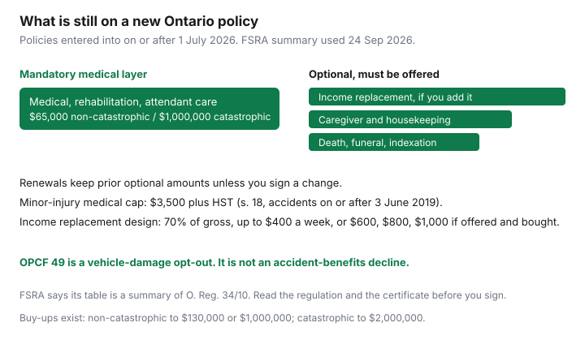

Insurance · Canada
Ontario Accident Benefits Choices: Mandatory vs Optional Coverages Households Must Revisit
Ontario drivers renew a policy that now splits accident benefits into a mandatory medical layer and a list of optional income and care benefits. The split took effect for contracts entered into or renewed on or after 1 July 2026. Households either keep last year’s package without knowing the price of each line, or they strip income replacement to save a premium and discover the gap after a crash. This page separates liability, direct compensation property damage, and accident benefits, then gives a broker script with the dollar limits FSRA still publishes. It is Ontario-specific. Broker-versus-direct shopping, deductibles, and kilometres stay on the Transportation guides.
Disclosure: Broker quote flows are an offer type. Saving Optimizer may earn a commission if partner links are added later. We do not currently claim a brokerage partnership. Dollar figures are FSRA’s consumer summary of O. Reg. 34/10 as read 24 Sep 2026, not a quote. FSRA says not to rely on the summary alone. Education only.
Key takeaways
- On policies entered into on or after 1 July 2026, medical, rehabilitation, and attendant care stay mandatory. Income replacement, caregiver, housekeeping, death and funeral, and the other non-medical accident benefits are optional and must be offered.
- A renewal on or after that date keeps the previous optional benefits at the previous amounts unless you and the insurer agree in writing to decline or change them. Who is covered for those newly optional benefits changes on 1 July 2026 even if your renewal date is later.
- FSRA’s published standard medical amounts are $65,000 for non-catastrophic impairments and $1,000,000 for catastrophic impairments, with options to buy more. A minor injury is capped at $3,500 plus HST under section 18 for accidents on or after 3 June 2019.
- Income replacement, when you buy it, is described as 70% of gross income up to $400 a week, with optional weekly limits of $600, $800, or $1,000. “Standard” on the FSRA table is not the same word as “included” on a new policy.
- OPCF 49, the DCPD opt-out available since January 2024, is a vehicle-damage decision. It is not an accident-benefits choice. Do not sign it to “save on AB.”
Separate liability, DCPD, and accident benefits in the OAP1 structure
The Ontario Automobile Policy (OAP 1) is not one blob called “full coverage.” Three ideas get mixed in renewal conversations. They pay different cheques.
| Layer | What it responds to | What it does not do |
|---|---|---|
| Third-party liability | Lawsuits and claims from other people for injury or property damage you cause. The legal minimum is $200,000. FSRA notes you can buy $500,000, $1 million, $2 million, or higher. | It does not pay your physiotherapy or replace your wages. Cutting liability to the $200,000 floor to save premium is a different, and usually worse, decision than trimming an optional accident benefit. |
| Direct compensation — property damage (DCPD) | Damage to your vehicle, to the extent you are not at fault, claimed from your own insurer when the crash is in Ontario and the other vehicle is insured by a participating insurer. | It is not an injury benefit. Since January 2024 you can sign OPCF 49 and opt out. That history is in its own section below. Do not treat a DCPD premium as the price of income replacement. |
| Accident benefits (AB) | Injury benefits from your own policy, generally regardless of fault: medical and rehabilitation, attendant care, and — only if the line is on the policy — income, caregiver, housekeeping, death, and related benefits. | AB does not repair the car. Collision and comprehensive are optional physical-damage coverages with deductibles. They are not accident benefits. |
Uninsured automobile coverage is part of the mandatory Ontario product IBC lists alongside liability and accident benefits. It is a fourth line on the certificate. It is not a substitute for medical benefits if you are hit by an uninsured driver and you also have AB. Read each limit separately. The broker-versus-direct guide is how to shop those limits without changing them mid-quote.
Track FSRA/government changes to which AB elements stay mandatory vs optional
FSRA’s industry page states that as of July 2026, medical, rehabilitation, and attendant care benefits remain mandatory, and all other accident benefits become optional. The consumer page says the same for policies entered into on or after 1 July 2026: you may increase the medical amounts, and income replacement, caregiver, housekeeping, and the rest are optional covers you can add.
O. Reg. 383/24 amended the Statutory Accident Benefits Schedule. For a contract entered into or renewed on or after 1 July 2026, the benefits in Parts II, IV, V, and VI are offered as optional benefits. On a renewal, those benefits as they read before 1 July 2026 are deemed to continue at the amounts previously payable unless you and the insurer agree in writing to decline a benefit or change the amount. That deeming rule is why a July renewal does not silently delete income replacement. It also means a saving appears only when someone signs a decline. Ask to see that signature line. FSRA’s consumer fact sheet adds a second change: who is covered for the newly optional benefits changes on 1 July 2026 regardless of the renewal date. Optional income, non-earner, and caregiver benefits apply to the named insured, their spouse, their dependants, and listed drivers. A passenger who is none of those people is not on that optional income benefit. Medical, rehabilitation, and attendant care follow their own insured-person rules. Do not assume every occupant has the income benefit you kept for yourself.

Track the next change the same way: FSRA’s consumer page and the regulation, not a forum summary. This article is stamped 24 Sep 2026. A later amendment can move a benefit back or change a dollar. Re-read both before you sign a decline.
Medical, rehab, attendant care, and income replacement trade-offs
FSRA’s customize-your-coverage page prints a “standard benefit amount” and the options to buy more. On a new policy after 1 July 2026, treat “standard” as the benefit design FSRA is describing, and look at the certificate for the word included. The medical lines are the ones the page calls mandatory.
| Benefit | Amount FSRA prints as standard | Published option |
|---|---|---|
| Medical, rehabilitation, and attendant care — non-catastrophic | $65,000. Mandatory on new policies from 1 July 2026. | Increase to $130,000 or $1,000,000. |
| Medical, rehabilitation, and attendant care — catastrophic | $1,000,000. Mandatory on those new policies. | Increase to $2,000,000. You can buy the increase for catastrophic and non-catastrophic together. |
| Minor injury inside medical benefits | $3,500 plus HST for an impairment that is predominantly a minor injury, for accidents on or after 3 June 2019, less amounts paid under the Minor Injury Guideline (O. Reg. 34/10, s. 18). | The cap can be set aside if a health practitioner documents a pre-existing condition that blocks maximal recovery inside the guideline. That is a medical determination, not a box you tick to save premium. |
| Income replacement | 70% of gross income up to $400 a week, in FSRA’s table. Optional, not mandatory, on new policies from 1 July 2026. | Weekly limit of $600, $800, or $1,000. Section 6(2) still says the insurer is not required to pay income replacement for the first week of disability (O. Reg. 34/10 as read 24 Sep 2026). The weekly cap in section 7 is “the amount fixed by the optional benefit.” |
| Caregiver | For catastrophic injuries in the published standard: up to $250 a week for the first dependant plus $50 for each additional dependant. Optional on new policies. | Make those amounts available for all injuries, not only catastrophic ones. |
| Housekeeping and home maintenance | Catastrophic injuries in the published standard: up to $100 a week. Optional on new policies. | Make that amount available for all injuries. |
| Death and funeral | $25,000 to an eligible spouse, $10,000 to each dependant, funeral up to $6,000, in the published standard. Optional on new policies. | $50,000, $20,000, and funeral up to $8,000. |
| Dependant care and indexation | Not in the basic published package. | Dependant care up to $75 a week for the first dependant and $25 for each additional, if you qualify. Indexation adjusts specified benefits by the CPI. |
Income replacement from the auto policy interacts with group LTD. Booklets offset auto benefits. A $400-a-week auto benefit is about $1,733 a month, before the group plan reduces its own cheque. It is not a salary. The disability guide is the offset stack. If you have no group LTD, the optional auto income benefit is one of the few injury-income layers left, and declining it is a larger decision than the premium suggests.
Opting down to save premium: when the save is reckless for your household
Opting down is a number, not a personality. Get the annual dollar saved for each line you decline or reduce. Then test the household, not the slogan.
- Reckless pattern. One earner, little or no emergency fund, no employer LTD, dependants, and a decline of income replacement to save a small premium. A serious injury then has mandatory medical and attendant care up to the limits, and no wage benefit from the auto policy. The first week is unpaid even when you buy the benefit. Group LTD, if you had it, would still have its own elimination period.
- Considered pattern. Two incomes, a group LTD booklet you have actually read, a cash reserve that covers the LTD wait, and a written premium difference for dropping the auto income benefit from $1,000 a week to $400, or declining a caregiver benefit you would not qualify for. You still keep mandatory medical and attendant care. You write down what the group plan offsets.
- Catastrophic medical limit. Moving from $1,000,000 to $2,000,000 is a severity purchase. It is not required. It is also not “junk.” A catastrophic impairment is the small set of injuries the schedule defines, not every sore back. Ask the price of the buy-up. If it is modest relative to the household, the buy-up is the usual keep. If it is large, the trade-off belongs on paper next to the emergency fund.
- Non-catastrophic $65,000. Five years of treatment can spend $65,000. The $130,000 option exists because of that. Declining the buy-up is reasonable only after you know the price and you know you are not already inside the $3,500 minor-injury cap for the injuries that never become “serious” on paper.
A renewal that arrives “same as last year” can still change who is covered for optional benefits after 1 July 2026. Read the certificate. A saving you did not ask for is a decline someone needs to explain.
DCPD opt-out history lesson—do not confuse with AB choices
Direct compensation property damage became optional to decline in January 2024. FSRA’s 12 December 2022 auto update approved OPCF 49, Agreement Not to Recover for Loss or Damage from an Automobile Collision, and said insurers would have to offer it when the amendment to Regulation 664 took effect in January 2024. IBC’s Ontario section still points readers to an explainer on opting out of DCPD as of 1 January 2024.
OPCF 49 is about the car, not about physiotherapy or wages. Signing it means you agree not to recover loss or damage from an automobile collision from your insurer, and the form’s point is that you also do not recover that vehicle damage from the at-fault party. You arrange repairs yourself. You generally should not sign it if the car is financed or leased, because those contracts require physical-damage coverage. You should not sign it because you wanted a cheaper accident-benefits premium. The dollars are different lines. A forum’s “5 to 10 percent” is not a FSRA rate. Ask your insurer what OPCF 49 does to your premium, in dollars, and what collision coverage remains. Until you reinstate, the endorsement does not reach backward to a crash that already happened.
Fault charts and how long a claim affects a renewal are on the claim-impact guide. DCPD claims are not the same as at-fault claims. Opting out of DCPD does not make you “not at fault.” It makes you unpaid.
Broker script: list each optional AB line with dollar limits before you sign
Before you sign, ask the broker or agent to complete this list in dollars. “You have the standard package” is not an answer after 1 July 2026.
- Liability limit, and the annual cost to move from the current limit to $1 million and to $2 million if you are below that.
- DCPD: included, or OPCF 49 signed? Dollar difference. Confirm the lender allows an opt-out before anyone mentions it.
- Medical, rehabilitation, and attendant care: non-catastrophic limit ($65,000, $130,000, or $1,000,000) and catastrophic limit ($1,000,000 or $2,000,000), with the price of each buy-up.
- Income replacement: declined, or $400, $600, $800, or $1,000 a week? Price of each step. Section 6(2) withholds the first week.
- Caregiver, housekeeping, death and funeral, dependant care, indexation: included or declined, and the annual premium for each included line.
- Who is a listed driver, and therefore who has the optional income benefit. Say the names.
- The total annual difference between “renew as deemed” and “the package we just chose,” in writing, before you initial a decline.
Take that sheet to the annual review. If you also have group LTD, staple the booklet maximum beside the weekly auto limit. The point of the script is that each optional line has a price and a job. A single “accident benefits” total hides both.
Sources & date stamps
- FSRA, customize your liability and accident benefits — $200,000 liability minimum; medical amounts $65,000 and $1,000,000; income replacement 70% up to $400 a week with $600, $800, and $1,000 options; other benefits optional on policies from 1 July 2026. Used 24 Sep 2026.
- FSRA, changes to Statutory Accident Benefits on 1 July 2026 — medical, rehabilitation, and attendant care remain mandatory; other accident benefits optional. Used 24 Sep 2026.
- O. Reg. 34/10 and O. Reg. 383/24 — optional benefits on contracts entered or renewed on or after 1 July 2026; deemed continuation unless a written decline; section 18 minor-injury cap of $3,500 plus HST for accidents on or after 3 June 2019. Read 24 Sep 2026.
- FSRA auto update, 12 Dec 2022 — OPCF 49 DCPD opt-out, insurers to offer it from January 2024. IBC mandatory-requirements page links an opt-out explainer “as of Jan. 1, 2024.” Used 24 Sep 2026.
- Insurance Bureau of Canada, mandatory auto insurance requirements — Ontario minimum includes third-party liability of $200,000, accident benefits, and uninsured automobile. Used 24 Sep 2026.
Frequently asked questions
What accident benefits are still mandatory in Ontario?
For policies entered into on or after 1 July 2026, FSRA says medical, rehabilitation, and attendant care remain mandatory. Income replacement, caregiver, housekeeping, death and funeral, and the other non-medical accident benefits are optional. A renewal keeps the previous optional amounts unless you agree in writing to change them.
What is the standard medical limit?
FSRA’s consumer summary prints $65,000 for non-catastrophic impairments and $1,000,000 for catastrophic impairments, with options of $130,000 or $1,000,000 non-catastrophic and $2,000,000 catastrophic. Minor injuries are capped at $3,500 plus HST under section 18 for accidents on or after 3 June 2019. Confirm the regulation before you rely on a summary.
Is income replacement included automatically?
Not on a new policy on or after 1 July 2026. Insurers must offer it. FSRA describes 70% of gross income up to $400 a week, with optional limits of $600, $800, or $1,000. Existing customers are deemed to keep what they had unless they sign a change.
Is opting out of DCPD the same as reducing accident benefits?
No. OPCF 49, offered since January 2024, waives recovery for vehicle damage from a collision. It does not change medical or income benefits. Do not sign it to save on accident benefits, and do not sign it on a financed or leased car without the lender’s permission.
Is this insurance advice?
No. Education only. Broker quote flows are an offer type. We do not claim a partnership with any brokerage or insurer.